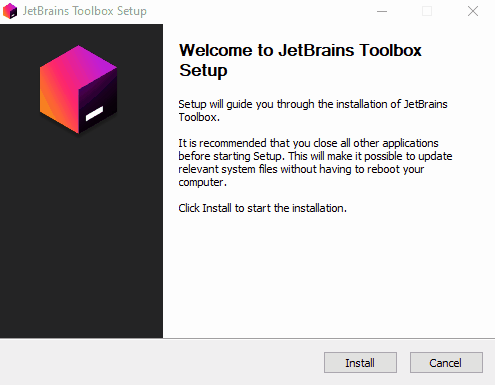
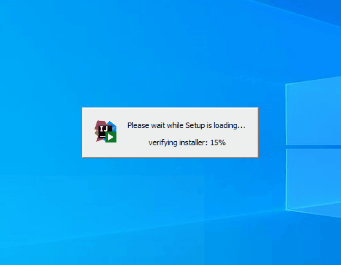
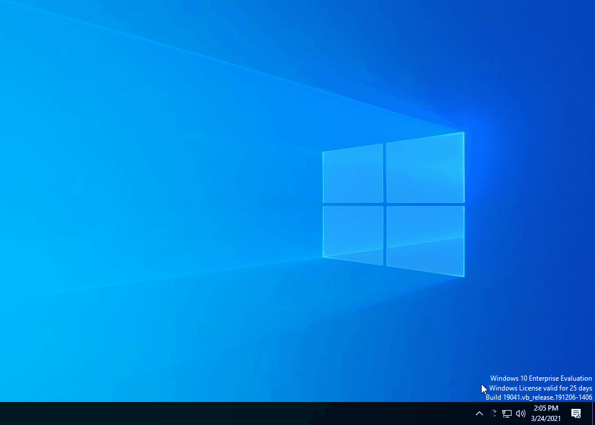
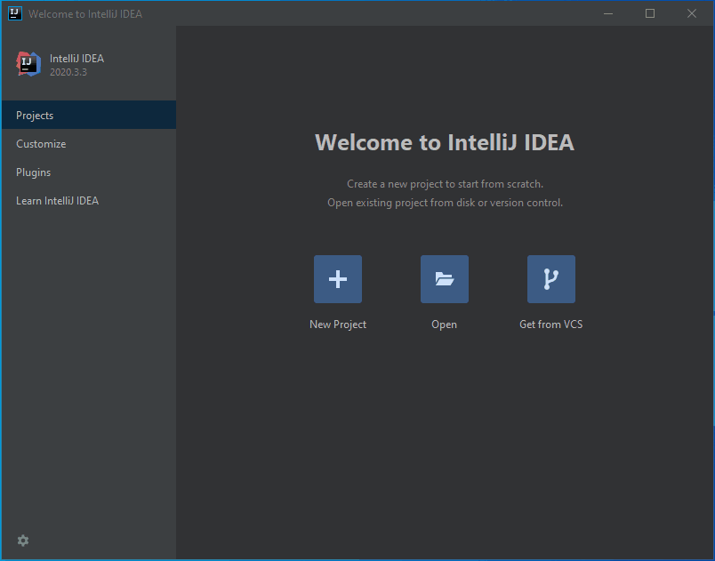
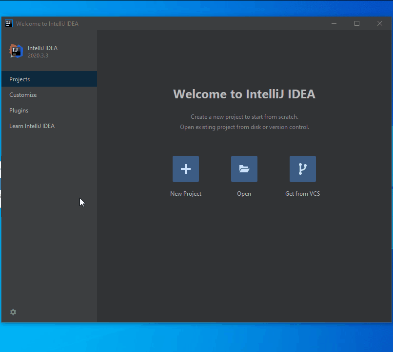

Následující kroky proveď s předstihem ještě před první lekcí. V ideálním případě to zabere jen pár minut, ale je potřeba mít to připravené už před začátkem první lekce. Nenechávej to na poslední chvíli – něco se může zadrhnout a je lepší mít čas na řešení. Pokud by byl s něčím problém, napiš na Slack Java 2 - webové aplikace. Na první lekci začneme tím, že si ověříme, že vše správně funguje.
Nejprve si vytvoř účet na GitHubu – pokud jej ještě nemáš. Při volbě uživatelského jména mysli na to, že odkaz na GitHub, ve kterém bude tvé přihlašovací jméno, budeš později nejspíš uvádět v životopisu, který budeš rozesílat firmám, až budeš shánět práci jako programátorka.
GitHub slouží jako úložiště zdrojových kódů a umožňuje spolupráci více lidí i velkých týmů na projektech. Není jediný svého druhu, ale je největší a nabízí prostor pro soukromé i veřejné projekty zdarma, takže je nejznámější. Zároveň je to tak trochu jako sociální síť, něco jako Facebook nebo možná spíš LinkedIn pro programátory. Je tedy běžné, že programátoři dávají odkaz na svůj GitHub do životopisu, aby se potenciální zaměstnavatel mohl podívat na jejich předchozí práci.
My budeme používat GitHub pro získávání zadání, na kterých budeme během lekcí pracovat, a také na odevzdávání úkolů. Využijeme jen zlomek toho, co GitHub nabízí – ale usnadní nám to práci a zároveň se naučíte základy práce s GitHubem.
Programovat budeme v IDE IntelliJ Idea od JetBrains (aktuální verze 2023.2.2 nebo novější). Ideu si můžeš nainstalovat ručně, ale já doporučuji použít nástroj JetBrains Toolbox App. Je to nástroj, který umožňuje snadnou instalaci všech produktů od JetBrains, jejich aktualizaci a práci s projekty.
JetBrains Toolbox App si stáhni (je k dispozici pro Windows, Mac i Linux) a nainstaluj. Na konci instalace zaškrtni, že se má Toolbox App rovnou spustit. Po spuštění se objeví jako ikona v systémové oblasti (u hodin).

Vývojové prostředí IntelliJ Idea existuje ve dvou verzích. Verze Community je zdarma pro všechny, dá se použít pro vývoj jakékoli aplikace v Javě, ale nemá některé pokročilejší doplňky, které usnadňují vývoj třeba právě webových aplikací. Verze Ultimatemá k dispozici spoustu dalších doplňků, normálně je placená – ale dobrá zpráva je, že JetBrains nám pro tento kurz poskytl licence zdarma. Děkujeme 🧡 Po instalaci zatím zvol Start Trial (30denní verze na vyzkoušení zdarma) – je potřeba si založit uživatelský účet u JetBrains, pokud ho ještě nemáš. Postup aktivace Trial verze je také popsaný na webu JetBrains: Start the free trial. Na první lekci si řekneme, jak aktivovat plnou licenci.
Pokud sis nainstalovala JetBrains Toolbox, stačí teď Toolbox otevřít, na záložce Tools najdeš IntelliJ IDEA Ultimate (nejspíš bude hned první) a zvolíš Install. Stažení a instalace trvá pár minut, stačí jen počkat, až se vše dokončí. Po dokončení instalace můžeš kliknutím na řádek IntelliJ IDEA Ultimate spustit.
Pokud cheš instalovat IntelliJ IDEA ručně, jdi na stránku pro stažení IntelliJ IDEA a stáhni si variantu Ultimate. Po stažení jenom spustíš instalační balík a počkáš, než se Idea nainstaluje. Na konci instalace zvol, že chceš Ideu rovnou spustit.

Při prvním spuštění se Idea bude shánět po licenci. Verzi Ultimate můžeš zkoušet třicet dní zdarma, takže pro začátek zvol Start trial a podle návodu Start the free trial aktivuje 30denní verzi na vyzkoušneí zdarma. JetBrains nám pro tento kurz poskytl licence zdarma na celý rok (díky 🧡), na první lekci si řekneme, jak trial verzi převést na roční darovanou licenci. První spuštění Idey chvíli trvá, stejně jako restart po výběru, že chceš použít trial verzi – nelekni se toho, na obrazovce se nic dít nebude, ale Idea na pozadí startuje. Pokud by se ale nic nedělo déle než pět minut, je už to fakt divné 😀

Pro spolupráci s GitHubem budeme potřebovat nástroj git pro verzování zdrojového kódu. Nebudeme s ním pracovat přímo, ale prostřednictvím Idey. Na začátku využijeme toho, že si ho Idea umí sama stáhnout a nainstalovat.
Na úvodní obrazovce Idey (kdy není otevřen žádný projekt) vyber na záložce Projects tlačítko Get from VCS. Idea nabídne možnost stáhnout projekt z nějakého verzovacího systému, např. z Gitu. To v tuto chvíli nechceme, ale využijeme toho, že Idea zjistí nainstalovanou verzi Gitu – a pokud Git nenajde, nabídne jeho stažení a instalaci. Počkej tedy, až vypíše Git is not installed a klikni na Download and install. Na Windows si instalátor Gitu vyžádá administrátorská oprávnění, jinak opět vše proběhned na pozadí a jen počkáš, než se na konci objeví v Idee text Git has been installed.

Pro vývoj v Javě budeme samozřejmě potřebovat i Javu 😀 Jedna Java je součástí IntelliJ Idea, je možné ji pro vývoj použít, ale my si radi nainstalujeme ještě svou verzi Javy, ať máme jistotu, že je to ta správná verze (konkrétně verze 17 LTS - nejnovější Java s dlouhodobou podporou). Také ve stažení Javy nám pomůže IntelliJ Idea.
Na úvodní obrazovce Idey (kdy není otevřen žádný projekt) vyber na záložce Projects tlačítko New project. Normálně se tímto způsobem dá založit nový projekt, my to využijeme jenom pro stažení Javy (přesněji SDK). V okně New project ponech vlevo zvolenou variantu projektu Javaa v pravé části rozbal nabídku Project SDK a vyber volbu Download JDK. V dialogu vyber Version 17 a v nabídce Vendor vyber Amazon Corretto a klikni na Download. Idea Javu stáhne a nainstaluje. Nyní můžeš okno New Project zavřít tlačítkem Cancel.
Snímek obrazovky níže ukazuje starší příklad instalace Javy 11, pro tento kurz instalujeme nejnovější verzi 17.

Pokud máš nainstalovaný JetBrains Toolbox, můžeš si do prohlížeče nainstalovat rozšíření, které umožňuje jedním kliknutím otevřít projekt z GitHubu v lokální IntelliJ Idee. Rozšíření jménem JetBrains Toolbox Extension je dostupné v příslušných obchodech:
Při úpravách webových stránek je potřeba často stránku v prohlížeči obnovovat. Dělat to ručně každého přestane brzy bavit, naštěstí do prohlížečů existuje doplněk LiveReload, který stránku obnoví, když dojde k její změně:
Na on-line lekce se budeme připojovat pomocí Zoomu. Zoom se dá používat i z webového prohlížeče, ale doporučuji mít jej raději na počítači nainstalovaný – webová verze nemá všechny možnosti, které má desktopový klient. Klienta si stáhni zde: Zoom Client for Meetings. Pokud už Zoom klienta máš z dřívějška, zkontroluj si, že máš aktuální verzi, tedy verzi 5.15.12 (nebo vyšší). Zoom se dříve neaktualizoval automaticky, je lepší aktualizaci vyvolat ručně. Na ikoně Zoomu v task baru otevři kontextové menu a z něj zvol volbu Check for Updates. Zoom zkontroluje, zda máš poslední verzi – a pokud ne, rovnou stáhne aktualizaci a nainstaluje ji.